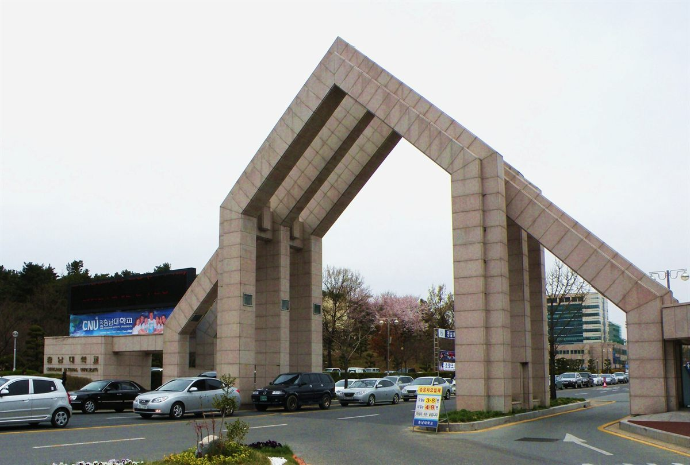

충남대학교는 대전 유성구에 있는 거점국립대입니다. 열 곳의 거점국립대 가운데 하나로, 충청권 학생들에게는 "집에서 다닐 수 있는 종합대학"이라는 자리를 오래 지켜 온 학교입니다. 학비 부담이 사립대보다 가볍고 학과 구성이 넓다는 점 때문에, 성적대가 서로 다른 학생들이 각자의 이유로 지원하는 학교이기도 합니다.
2027학년도 충남대는 신입생 4,164명을 뽑습니다. 이 가운데 수시가 3,354명(80.5%), 정시가 810명(19.5%)입니다. 열 자리 중 여덟 자리가 수시라는 뜻입니다. 올해 눈에 띄는 변화는 지역인재가 801명으로 늘어난 것과 지역의사선발전형이 새로 생긴 것 둘입니다. 원서접수(9월 7일 오전 9시 ~ 9월 11일 오후 6시) 기간에 맞춰 전형별 핵심을 정리했습니다.
① 큰 그림 — 3,354명이 어디로 나뉘나
충남대 수시는 크게 셋으로 갈라집니다.
- 학생부교과 — 1,969명
- 학생부종합 — 1,225명
- 실기·실적 — 160명
가장 먼저 읽어야 할 숫자는 학생부교과 1,969명입니다. 수시 전체의 절반을 훌쩍 넘습니다. 수도권 사립대들이 학종과 논술로 무게를 옮겨 온 것과 달리, 충남대의 중심은 여전히 내신 성적에 있습니다. 그리고 충남대에는 논술 전형이 없습니다. 논술 준비로 승부를 보려는 학생에게는 애초에 문이 없는 학교라는 뜻이니, 지원 카드를 짤 때 이 점을 먼저 확인하셔야 합니다.
② 학생부교과 1,969명 — 일반 1,119명, 지역인재 749명
학생부교과 안을 열어 보면 이렇게 나뉩니다.
- 일반전형 — 1,119명
- 지역인재전형 — 749명
- 지역인재 저소득층전형 — 7명
- 기회균형선발Ⅰ전형 — 89명
- 국가안보교과전형 — 5명
교과 성적 반영 방식도 확인해 두시면 좋습니다. 충남대는 과학탐구실험과 체육·예술·교양 교과(군)을 제외한 전 교과목을 반영하며, 진로선택과목도 포함됩니다. 반영 시기는 졸업예정자가 3학년 1학기까지, 졸업자가 3학년 2학기까지입니다.
여기서 학부모님들이 자주 놓치시는 대목이 있습니다. "주요 과목만 잘하면 된다"가 통하지 않는 구조라는 점입니다. 국·영·수만 반영하는 대학과 달리 전 교과목을 보기 때문에, 아이가 소홀히 한 과목 하나가 그대로 평균을 끌어내립니다. 고1·고2 학부모님이라면 이 문장을 기억해 두실 만합니다.
③ 지역인재 801명 — 2027학년도는 '고교 3년' 기준입니다
충남대 지역인재 모집인원은 801명으로, 전년보다 48명 늘었습니다. 충청권 학생에게는 가장 중요한 숫자입니다.
지원 자격에서 반드시 구분해야 할 것이 있습니다. 최근 뉴스에서 "지역인재 요건이 중학교까지 강화된다"는 이야기를 들으셨을 텐데, 그 강화는 2028학년도부터 적용됩니다. 2027학년도는 여전히 '고등학교 3년 전 과정 이수' 요건입니다. 즉 지금 고3인 학생은 해당 지역 고등학교를 3년 다녔으면 지원 자격이 됩니다.
반대로 지금 고2 이하라면 이야기가 달라집니다. 2028학년도부터는 중학교 과정까지 해당 지역에서 마쳤는지를 함께 보게 되므로, 이사나 전학을 고민 중인 가정이라면 학년이 아니라 학교 소재지 기준으로 미리 따져 보셔야 합니다. 한 해 차이로 자격이 갈리는 항목입니다.
④ 신설 지역의사선발전형 27명 — 자리가 권역별로 정해져 있습니다
2027학년도에 새로 생긴 전형입니다. 의료 취약지에 의사를 공급하려는 목적으로 만들어졌고, 학생부종합Ⅱ에서 27명을 선발합니다. 특이한 점은 전체 인원을 권역별로 쪼개 놓았다는 것입니다.
- 천안권 — 6명
- 서산권 — 5명
- 논산권 — 3명
- 홍성권 — 3명
- 공주권 — 2명
- 광역권(대전·세종·충남·충북) — 8명
권역별로 뽑는다는 것은 경쟁 상대가 전국이 아니라 그 권역 안이라는 뜻입니다. 다만 한 권역의 자리가 두세 명에 그치므로 변동성이 매우 큽니다. 그해 지원자 구성에 따라 합격선이 크게 출렁일 수 있고, 첫해라 참고할 입시 결과도 없습니다.
그리고 이 전형은 선발 이후의 조건이 핵심입니다. 지역의사 전형은 통상 졸업 후 해당 지역에서 일정 기간 근무하는 의무가 따르는 구조입니다. 성적이 된다고 가볍게 넣을 자리가 아니라, 아이의 진로 계획과 함께 결정할 자리입니다. 구체적인 의무 근무 기간과 조건은 반드시 요강 원문에서 확인하시기 바랍니다.
참고로 학생부종합Ⅱ에는 지역인재전형(의예과) 18명도 별도로 있습니다. 의예과를 목표로 하는 충청권 학생은 교과 지역인재, 학종 지역인재, 지역의사선발까지 여러 문을 함께 놓고 비교하셔야 합니다.
⑤ 학생부종합 1,225명 — 면접전형 433명 vs 서류전형 276명
충남대 학생부종합의 주력은 학생부종합Ⅰ입니다. 두 갈래로 나뉘고, 이 선택이 학종 지원자에게는 가장 실질적인 갈림길입니다.
- 학생부종합Ⅰ 면접전형 — 433명. 서류평가 후 면접을 실시합니다.
- 학생부종합Ⅰ 서류전형 — 276명. 면접 없이 서류만으로 선발합니다.
면접이 있는 전형의 방식은 구체적으로 공개돼 있습니다. 학교생활기록부 등 제출 서류를 바탕으로 15분 이내 개별면접을 보며, 평가 기준은 의사소통 능력·계열적합성·사회적역량 세 가지입니다.
이 세 가지를 그대로 읽으면 준비 방향이 나옵니다. 계열적합성은 "왜 이 학과인가"에 대한 답이 생기부 활동으로 뒷받침되는지를 봅니다. 의사소통 능력은 내용을 아는 것과 별개로 말로 풀어낼 수 있는지입니다. 생기부에 적힌 탐구를 아이가 자기 문장으로 설명하지 못한다면 면접형은 불리합니다. 기록은 충실한데 말하기가 약한 학생은 서류전형 쪽이 안전합니다.
이 외에 학생부종합Ⅱ·Ⅲ에는 SW인재(4명), 영농창업인재(12명), 국가안보융합인재(국토안보 19명·해양안보 40명), 농어촌학생(121명), 저소득층학생(76명), 특수교육대상자(88명), 특성화고출신자(9명), 특성화고졸재직자(30명), 만학도(30명) 등이 있습니다. 여기에 난치병력자·다문화·조손·다자녀 가정 등을 대상으로 하는 기회균형선발Ⅱ(42명)가 올해 신설됐습니다. 해당 자격이 있다면 일반 전형과 경쟁 구도가 다르니 먼저 확인해 보실 가치가 큽니다.
⑥ 수능최저 — 상위 3개 영역 합 12등급 이내
학생부교과 전형에는 수능최저학력기준이 적용됩니다. 2027학년도 기준은 국어·영어·수학·탐구(1과목) 중 상위 3개 영역 등급의 합이 12등급 이내입니다. 다만 일부 모집단위에 적용되며, 기회균형선발Ⅰ전형은 수능최저를 적용하지 않습니다.
"3개 합 12"라는 숫자를 풀어 보면 평균 4등급입니다. 조건이 빡빡한 편은 아니지만, 그렇다고 무시할 수준도 아닙니다. 교과 전형으로 충남대를 노리는 학생 중 내신은 충분한데 수능 공부를 놓아 버린 경우가 매년 나오는데, 이런 학생은 원서를 쓰고도 최저를 못 맞춰 탈락합니다. 내신과 수능 중 하나만 붙드는 전략이 통하지 않는 전형이라고 보시면 됩니다.
단, 의예과를 비롯한 일부 모집단위는 기준이 이보다 높게 적용될 수 있습니다. 지원하려는 학과의 기준은 요강에서 직접 확인하셔야 합니다.
⑦ 전공자율선택제와 농업생명과학대학 — 모집 구조가 달라졌습니다
학과 선택과 관련해 두 가지 변화가 있습니다.
첫째, 전공자율선택제가 단과대학별로 세분화됐습니다. 이른바 '무전공' 모집을 학교 전체 하나로 묶지 않고 단과대학 단위로 나눈 것입니다. 계열 방향은 정했지만 세부 학과를 못 정한 학생에게는 선택 폭이 조금 더 구체적으로 바뀐 셈입니다. 다만 입학 후 전공을 어떻게 배정받는지는 학생에게 매우 중요하므로, 전공 배정 방식과 정원 제한을 요강에서 직접 확인하고 지원하시기 바랍니다.
둘째, 농업생명과학대학이 2027학년도부터 12개 학과별 모집을 재개합니다. 그동안 광역·계열 단위로 뽑던 것을 학과별로 되돌린 것입니다. 이 대학을 지망하는 학생이라면 지난해 입시 결과를 그대로 대입하기 어렵습니다. 모집 단위가 쪼개지면 학과별로 지원자가 흩어지면서 합격선이 위아래로 흔들리기 때문입니다.
⑧ 지원 전 체크리스트
- 내신이 강하다면 → 학생부교과 일반전형(1,119명)이 가장 큰 문. 단 전 교과목 반영이라 약한 과목이 그대로 반영됩니다.
- 충청권 고교 3년을 다녔다면 → 지역인재(교과 749명 포함, 전체 801명). 2027학년도는 고교 3년 이수 요건입니다.
- 지금 고2 이하라면 → 2028학년도부터 중학교 과정까지 보는 방향으로 강화됩니다. 이사·전학 계획이 있다면 미리 확인.
- 생기부가 강하다면 → 학생부종합Ⅰ. 말로 설명할 자신이 있으면 면접전형(433명), 아니면 서류전형(276명).
- 의예과 지망 충청권 학생이라면 → 교과 지역인재 · 학종 지역인재(18명) · 지역의사선발(27명, 권역별)을 함께 비교. 의무 근무 조건 확인 필수.
- 교과 전형 지원자라면 → 수능최저 3개 합 12등급을 맞출 수 있는지부터 계산. 기회균형선발Ⅰ은 미적용.
- 논술을 준비했다면 → 충남대에는 논술 전형이 없습니다. 다른 학교로 배분하세요.
- 공통 → 원서접수는 9월 7일 오전 9시 ~ 11일 오후 6시, 합격자 발표는 12월 18일 오후 3시입니다.
마무리 — 충남대는 '내신으로 읽는 학교'입니다
수시 3,354명 중 1,969명이 학생부교과이고 논술은 아예 없습니다. 이 두 문장이 충남대의 성격을 거의 다 설명합니다. 생기부와 면접으로 승부를 보는 문도 1,225명분 열려 있지만, 학교의 중심축은 분명히 3년 동안 쌓은 내신입니다.
여기에 충청권 학생이라면 지역인재 801명이라는 자리가 더해집니다. 같은 성적이라도 지역인재 자격이 있느냐 없느냐에 따라 실질 경쟁률이 달라지므로, 충청권에 사시는 가정은 이 자격부터 확인하고 전략을 짜시는 편이 순서에 맞습니다.
고1·고2 학부모님께 한 가지만 덧붙이겠습니다. 충남대처럼 전 교과목을 반영하는 교과 중심 대학을 염두에 두신다면, 아이가 싫어하는 과목을 버리게 두면 안 됩니다. 고3에 와서 만회할 수 있는 항목이 아닙니다. 그리고 수능최저가 붙는 이상 내신과 수능을 같은 3년에 함께 끌고 가야 합니다.
와와 학습코칭센터는 학생의 내신·생기부·모의고사 상황을 함께 놓고, 수시 6장을 어떤 전형으로 나눌지 상담해 드립니다. 지역인재 자격이 되는지, 수능최저를 맞출 수 있는 과목 조합이 무엇인지도 실제 성적표를 보며 짚어 드립니다.
※ 본 글의 모집인원·전형방법·일정은 충남대학교가 발표한 2027학년도 대학입학전형시행계획 및 수시모집 계획과 이를 다룬 언론 보도를 바탕으로 정리한 것입니다. 수능최저학력기준은 학생부교과전형에 대해 확인된 내용으로 모집단위·계열에 따라 다르게 적용될 수 있으며, 의예과 등 일부 학과는 기준이 더 높을 수 있습니다. 지역의사선발전형의 의무 근무 기간과 조건, 학생부종합의 1단계 선발 배수와 단계별 반영 비율, 면접 일정, 전공자율선택제의 전공 배정 방식, 실기·실적 전형의 종목별 기준은 본 글에 담지 않았거나 확정 표기하지 않았습니다. 지원 전 반드시 충남대학교 입학처의 2027학년도 수시모집요강 원문에서 최종 확인하시기 바랍니다. 본 글은 학부모·학생의 이해를 돕기 위한 정리 자료입니다.